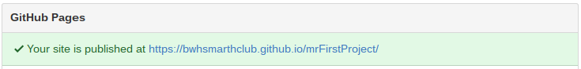
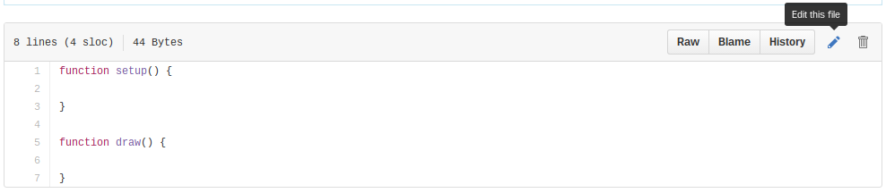
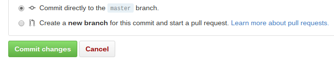
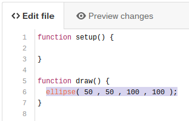
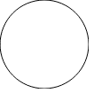
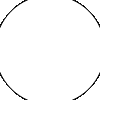
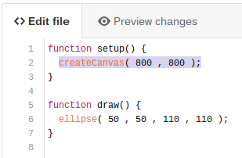

Achilles: So, you've helped me to create a GitHub account, and I've set up my first repository. And you've promised me that we'd make it do something interesting in this Part.
Tortoise: Indeed. You're going to actually write your first lines of code. Are you ready?
Achilles: I think so. Is there anything I need to know before we get started?
Tortoise: Nope. We're going to dive right in. You're probably going to have a lot questions as we go. I'm going to try to just keep this simple and let you figure things out for yourself. The name of the game is experimentation. You'll learn by trying things out and seeing what happens. Are you game?
Achilles: I'm game. Let's get started.
Tortoise: Are you signed in on github.com?
Achilles: Yes, I still am.
Tortoise: Are you on your "Profile" page?
Achilles: Remind me one more time how to get there...
Tortoise: Sure thing. Just click the drop-down menu in the upper-right corner, and select "Your Profile".

Achilles: OK. I can see that repository.
Tortoise: Go ahead and click on the name of your repository to open it.

Achilles: Now I can see those four files again.
Tortoise: Great. We're going to open up one of them in just a minute. But first, do you still have the webpage for your sketch open in another tab?
Achilles: No, I closed it because it was boring.
Tortoise: Not for long. You need to go back to the "Settings" tab and scroll down to the "GitHub Pages" section. The address for the site will be shown there. Right click (two-finger tap on Chromebook) on the address and open it in a new tab.
Achilles: OK. I'm back at the code tab with the four files.
Tortoise: Click on the one called "sketch.js" to open it.

Achilles: I opened it. There's a bunch of info at the top and then a box with some numbers down the side and a couple functions.
Tortoise: Perfect. That box is the code contained in the file. Click on the little pencil in the upper-right to open the file for editing.
Achilles: OK, I clicked it. It looks pretty much the same except now it says "Edit file".
Tortoise: And now you can click on the text to edit it. Type in this new instruction on line 6:

Achilles: Got it. What does it mean?
Tortoise: You're going to find out in a moment when you run the program.
Achilles: Alright, then. Does it have to be exactly like that?
Tortoise: For now, let's say yes. Try to get it exactly as I've shown.
Achilles: OK. Done.
Tortoise: Scroll to the bottom and click the green button that says "Commit changes".
Achilles: What does "Commit changes" mean?
Tortoise: It means that you are committing to the changes you've made. Afterwards, your project will have the new line of code in it.
Achilles: So, basically it means "Save".
Tortoise: Pretty much.
Achilles: OK. I saved it. I mean, I "committed my changes".
Tortoise: Great. Now it's almost time to run your program.
Achilles: Awesome! Let's do it! Hurry up! I can't wait!
Tortoise: Uh... This might be a good time to mention something...
Achilles: Oh, no. What?
Tortoise: Commits sometimes take a while to take effect on GitHub.
Achilles: What's that mean?
Tortoise: After you "save" your changes by committing them, it may take some time before you can see the changes happen. Right now, if you go to your webpage tab and refresh it, you'll reload your program. But you might not see anything yet.
Achilles: Yeah, it's still just a blank page.
Tortoise: Try clicking refresh again every few seconds. Eventually you'll see something.
Achilles: How long will it take?
Tortoise: Up to a minute sometimes...
Achilles: Oh, I could see myself getting annoyed with this...
Tortoise: Yes, I was worried about that. It won't always take that long, but sometimes it will.
Achilles: Will it go faster if I keep clicking refresh really fast?
Tortoise: No. Just be patient, and try it again every 10 seconds or so.
Achilles: Patience is not really my strong... Hey! It changed! There's a circle now!
Tortoise: Hooray! Your first program!

Achilles: Cool! I mean, it's only a circle. But still. That was pretty easy.
Tortoise: Indeed! Now let's make it do something else. Go back to your code and click the pencil to edit again. Change the ellipse() instruction so it looks like this:
Achilles: Got it. Should I go back to the webpage and refresh?
Tortoise: Yes, but be patient...
Achilles: I'll try. Refreshing... Refreshing... There it goes! It's a bigger circle now.
Tortoise: OK. So now it's time for you to do some thinking. We changed the last two numbers from 50 to 100 and saw the circle got bigger. What can you infer?
Achilles: Those last two numbers control how big the circle is, right?
Tortoise: Correct! So what do you predict would happen if we changed them from 100 to 110?
Achilles: I guess that the circle would get even bigger.
Tortoise: OK. try it!

Achilles: Yup. It got bigger. But it's all cut off at the edges now. Why's that?
Tortoise: So we've run into our first problem. You're going to encounter this a lot. It's a part of the coding process.
Achilles: Oh, no! Did I do something wrong?
Tortoise: No. You did it perfectly. You've just run out of space on your canvas.
Achilles: Canvas?
Tortoise: That's what the drawing area is called. You see, in p5.js, the canvas starts out at a size of 100 by 100 pixels. You drew a circle that was too big for that space.
Achilles: That's a really small space. There must be a way to make that bigger.
Tortoise: Aha! That's the spirit! You're already thinking about ways to solve this problem. And you're correct. We can make the canvas bigger.
Achilles: Are you going to tell me how?
Tortoise: I am. We need to set the canvas to be bigger using another instruction. It will go in the setup() function. Edit your code so it looks like this. Oh, and make sure you get the capitalization right. That's important.
Achilles: OK. Done.
Tortoise: Now commit your changes and refresh the webpage until the changes kick in
Achilles: It worked! Now the whole circle is drawn. So I take it that createCanvas() instruction sets the size of the canvas?
Tortoise: Right. Your canvas is now 800 by 800 pixels. So you have a lot more space to draw.
Achilles: Alright. Problem solved. What should I do next?
Tortoise: Next I want you to try to figure out what the four parameters of the ellipse() instruction do.
Achilles: Parameters? What's a parameter?
Tortoise: A parameter is a value that tells an instruction how to behave. They usually appear inside of parentheses immediately after the instruction. The ellipse() instruction you wrote earlier has four parameters, each sepparated by a comma.
Achilles: Yes, I see. The four parameters are 50, 50, 110, and 110 right now.
Tortoise: Right. You've already made a guess about what the last two parameters do. What I want you to do now is to change each of those four values, one at a time, and see what happens to the output.
Achilles: What should I change them to?
Tortoise: That's up to you. Experiment. But only change one at a time so you can really nail down what each of them does. Don't forget to commit after each change you make and refresh that webpage to see the results. Go ahead and take a few minutes to experiment. Your goal is to determine how each of the four parameters in the ellipse() instruction effect the shape that is drawn on the screen.
Achilles: Hey, Ms. Tortoise!
Tortoise: Oh, my! You startled me. I must have dozed off. Did you figure out the role of each of those parameters?
Achilles: I did.
Tortoise: Good for you! You've learned something on your own already. Did you find it interesting?
Achilles: Well, yeah, I guess. I'm pretty certain I could draw any size ellipse anywhere on the screen I want now.
Tortoise: That's good! I can already tell you're going to be good at coding. It's all about experimenting and learning as you go. Do you want to see something really cool now?
Achilles: Uh, yeah! Lay it on me!
Tortoise: OK. This is the last thing I'm going to ask you to do in this Part. We're going to change the last two ellipse() parameters back to 100. Then we're going to replace the first two paramters with some text. I'll show you what to type in a moment. You give it a try, and come see me in the next Part when you're done, ok?
Achilles: Got it! Show me what to change.
Tortoise: OK. Here it is... Now, make sure you get the capitalization right. Also, when you commit and start refreshing your webpage, try moving the mouse around on the screen.
Achilles: Capitalization, check! Move mouse around on screen, check! OK, just give me the new paramters already!
Tortoise: Here you go! See you in the next Part!